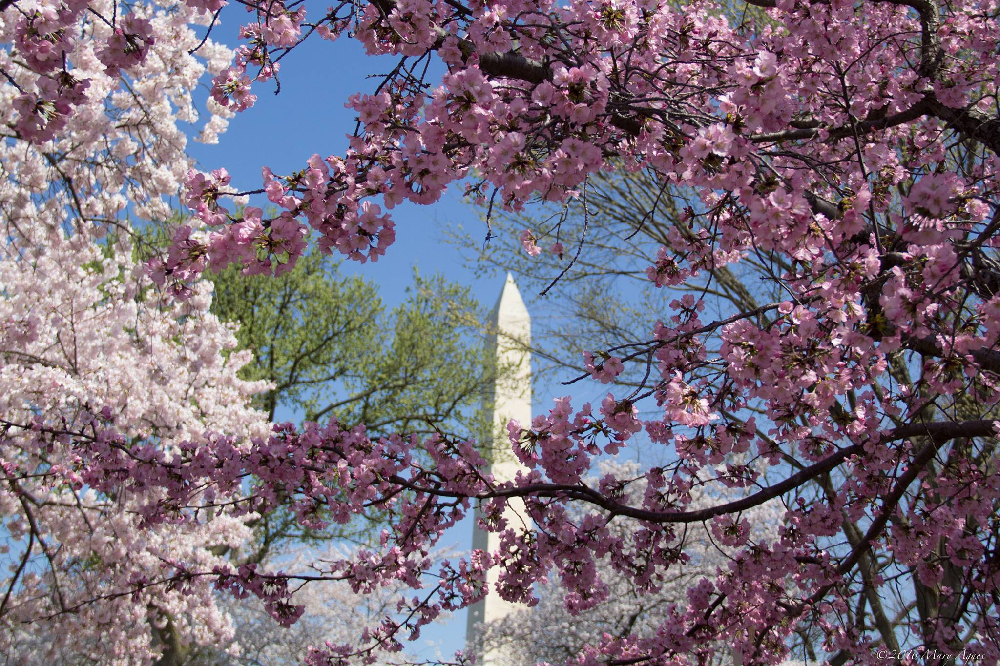
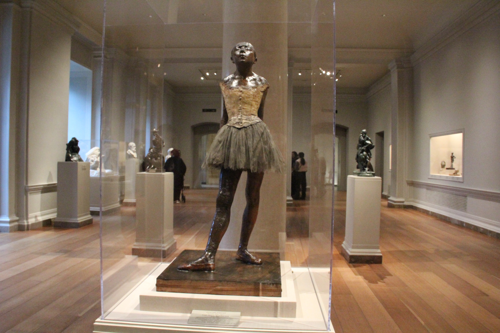
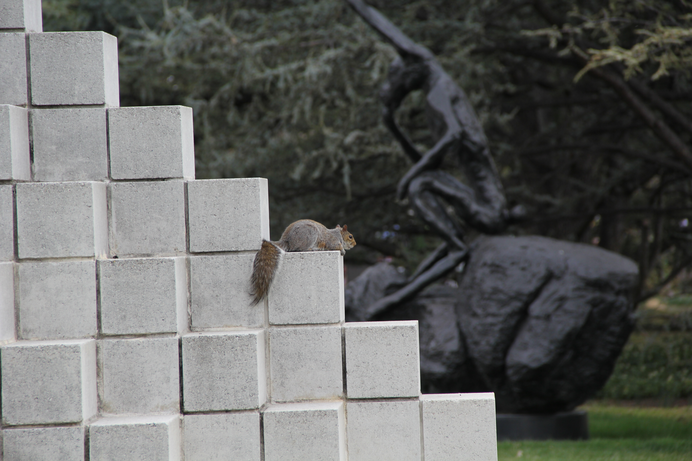
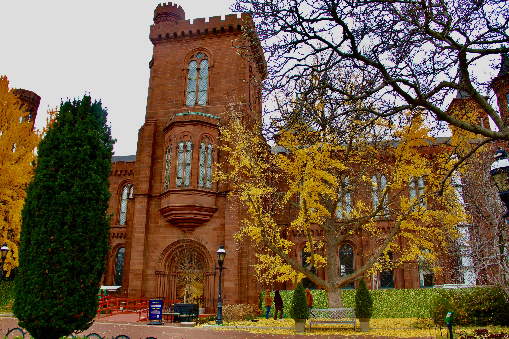
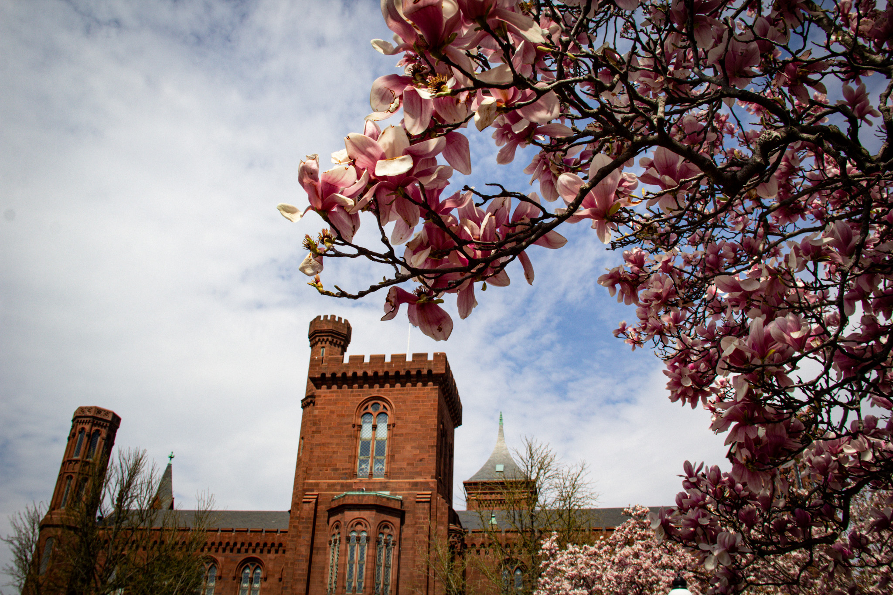
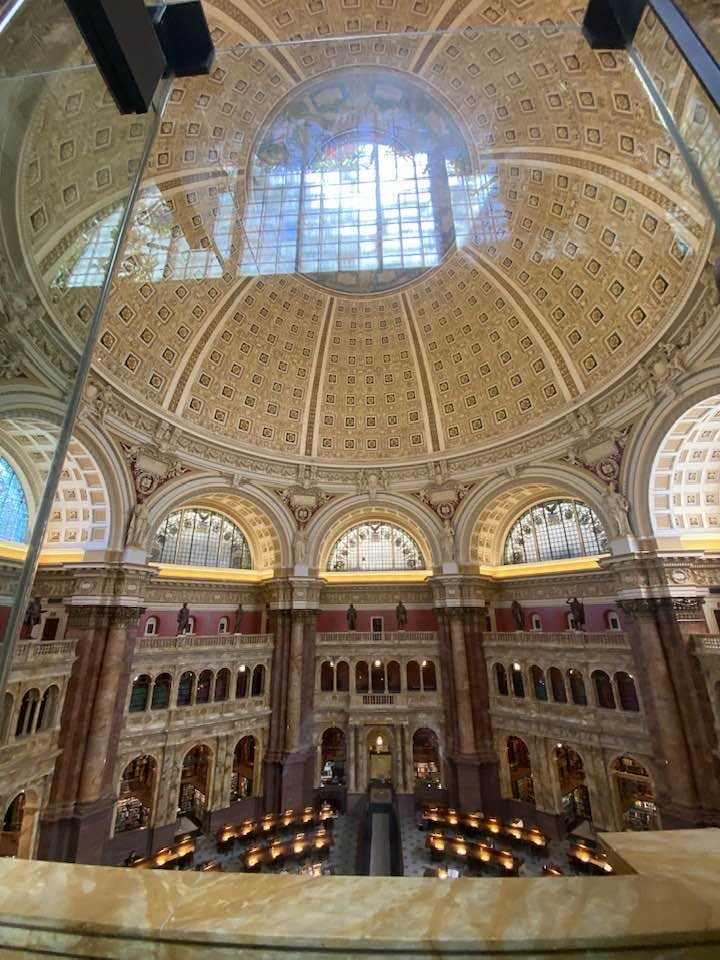
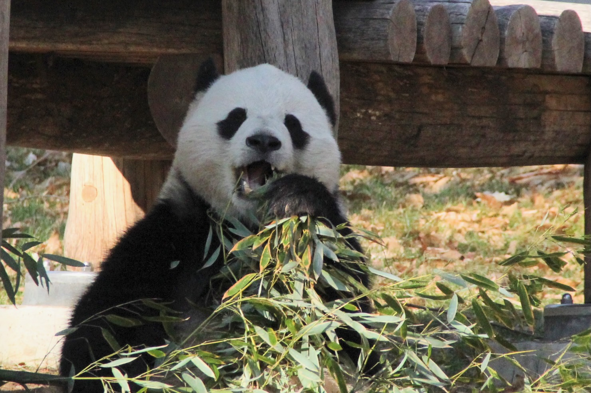
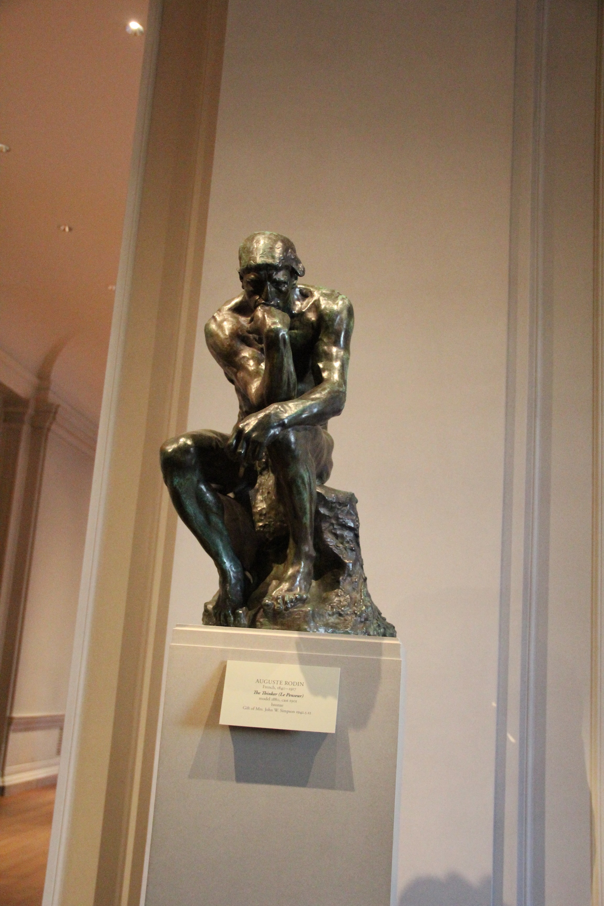
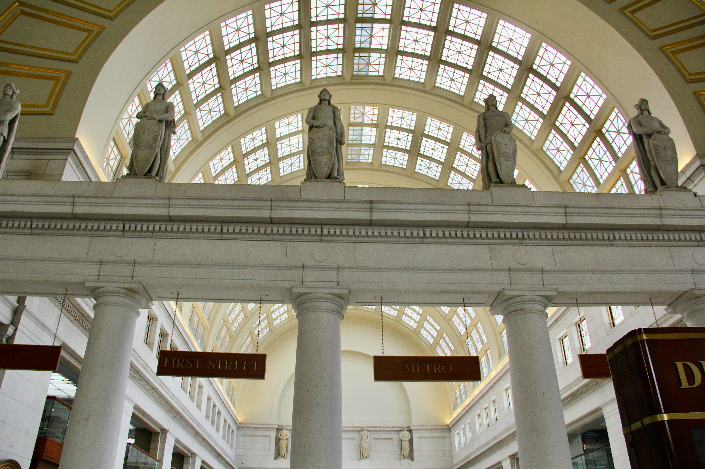
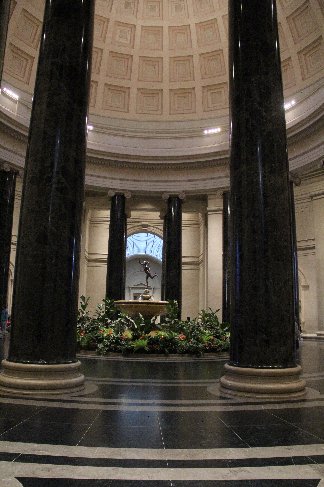

Beautiful things to see in Washington, DC










Reflection:
I'm still trying to fully grasp the new idea of Grid formatting and span,
and I still get them confused. I'm also used to seeing pages with a hero
image, so I was surprised that the largest image wasn't as large as a hero
image. After doing some research, I learned that fr and span are not the
same and do different things.
When I think about other places where I have seen this format, commercial
storefront websites such as Amazon come to mind. This layout lets potential
customers browse many products at once, while a few larger images can draw
attention to certain products. Working on this project is helping me better
understand how grids affect a page's look.